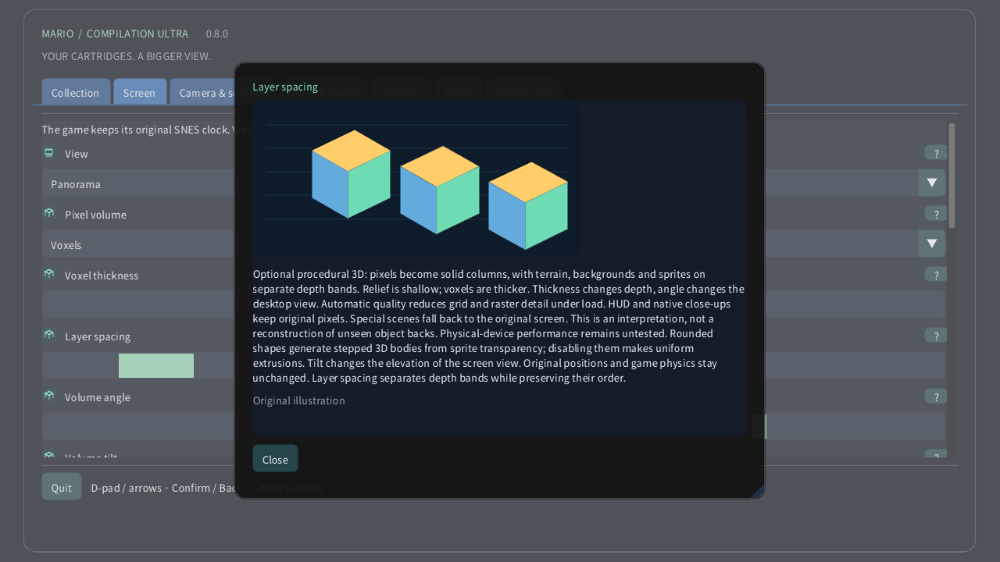

Pixel volume

On a computer or handheld, open Screen → Pixel volume. Start with Pixel relief for subtle depth, then try Voxels. Thickness changes the body of each pixel; spacing moves the layers apart without changing their draw order. On Quest, use the Volume page of the spatial remote. On a watch, the crown still zooms from the entire area to the original screen at its closest position.
- 0 · Original 2D
- 1 · Pixel relief
- 2 · Voxels
Optional procedural 3D: pixels become solid columns, with terrain, backgrounds and sprites on separate depth bands. Relief is shallow; voxels are thicker. Thickness changes depth, angle changes the desktop view. Automatic quality reduces grid and raster detail under load. HUD and native close-ups keep original pixels. Special scenes fall back to the original screen. This is an interpretation, not a reconstruction of unseen object backs. Physical-device performance remains untested. Rounded shapes generate stepped 3D bodies from sprite transparency; disabling them makes uniform extrusions. Tilt changes the elevation of the screen view. Original positions and game physics stay unchanged. Layer spacing separates depth bands while preserving their order.
Illustrated settings
- Voxel thickness
- 1–16 px
- Layer spacing
- 1–12 px
- Volume angle
- −30° … +30°
- Volume tilt
- −30° … +30°
- Rounded voxel shapes
